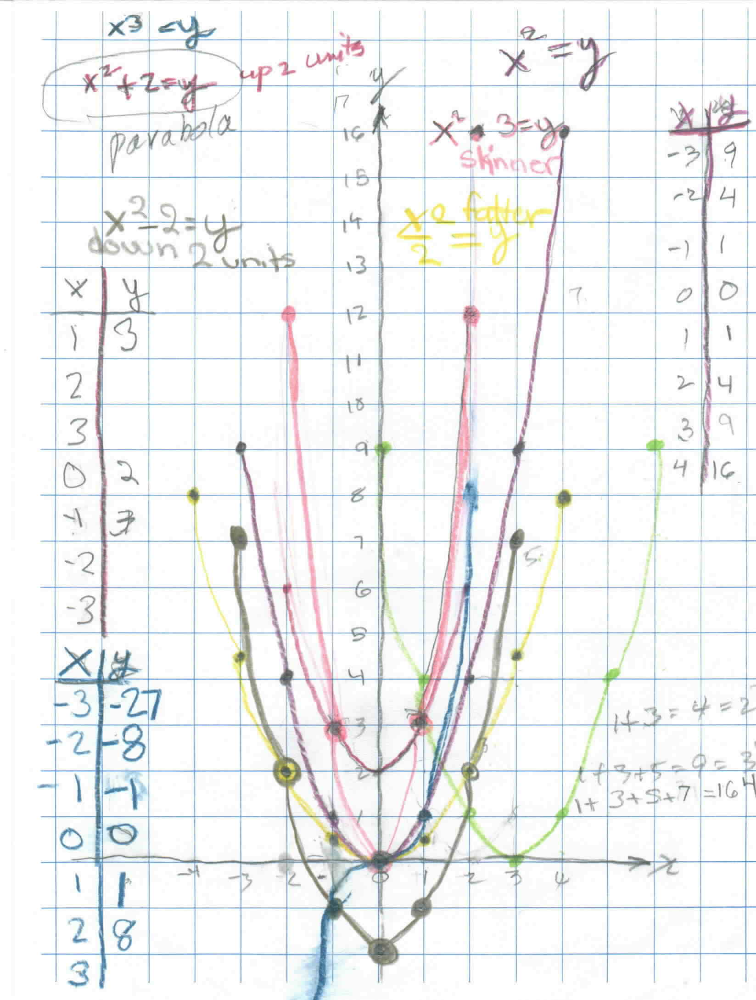
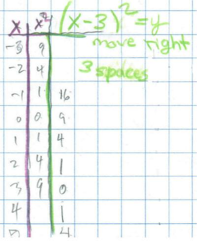

Sheri's work on finding the equation of a parabola that is moved.
Don went through the multiplication of negative numbers with Sheri because she needed that idea to do the graph. On a number line Don made sure Sheri understood that as one goes from -2 to -1 that is going up 1.
Sheri realized from the patterns that (-3)2 = +9 = 9. Sheri graphed the equation y = x2 (in mulberry, below). After she graphed y = x2 , Don had her look at how the graph goes up from (0,0)- go 1 to the right you go up 1, 1 to the right you go up 3, 1 to the right you go up 5, 7, 9 etc. The parabola goes up odd numbers! Don asked her to find the equation of the parabola if this original parabola is moved up 2 units. Her answers were y = x3 and y = x2 + 2. (It turned out that the second answer was arrived at talking with Mom's). Sheri proceeded to graph y = x3 next. In this process Sheri and Don worked on (-3)3= -3 x -3 x -3 = -27. Sheri found that "a negative number raised to an odd power is negative and a negative number raised to an even power is positive". (-3)4= -3 x -3 x -3 x -3 = -81. They also talked about (-3)4 is not the same as -(34). T he graph of y = x3 is the blue graph and not a parabola. Then Sheri graphed y = x2 + 2 (in red), which moved the parabola up 2 units. Then Don gave Sheri the problem of moving the original parabola to the right 3 units (light green). The equation she gave for this was y = x2 . 3. (Now a very important idea here is that even if Sheri's equation is not correct, her equation will give a graph that will be important, and do something different). Look at the graphs below- this one is in neon pink.

So Sheri's equation gave a graph that made the original one skinnier! She immediately said if you divide, the graph will be wider (the yellow one) and of course she was right. She didn't get the equation to move the graph to the right yet, but she did a fine job and learned lots about signed numbers and raising them to a power!
In trying to move the parabola to the right 3 units, Don and Sheri made the following table:

They talked about how the numbers in the third column are different from those for the x2 values. Sheri said they are the same, square numbers, but moved down. What do we have to do to get 3 to go to 9? Subtract 3. So the new rule would be as Sheri wrote in green, (x - 3)2 = y. This is the hardest one to get, because you have to subtract before squaring.